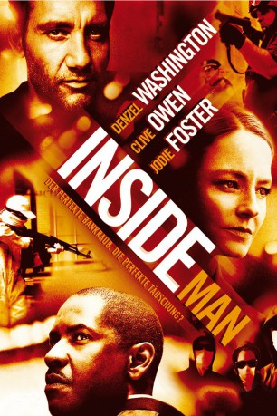
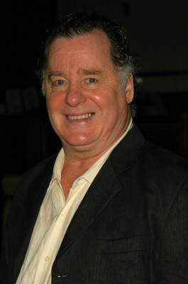

#889 Inside Man
 
 IMDB-Wertung: 7.6 / 10
IMDB-Wertung: 7.6 / 10  Metascore: 76
Metascore: 76 
New York Cop Keith Frazier muss sich Anschuldigungen aus den eigenen Reihen erwehren, als er und sein Partner zu einem Banküberfall in der Innenstadt gerufen werden. Dort müssen die Cops erkennen, dass der Bankräuber Dalton Russel einen perfekten Plan ausgetüftelt hat und auf alle Eventualitäten vorbereitet ist. Eine besondere Rolle beim darauffolgenden Katz-und-Maus-Spiel kommt der Anwältin Madeleine White zu.
Jahr: 2006
Dauer: 129 Minuten
FSK: 12
Land: USA Studio: Universal PicturesTonspuren: DTS - ,
Untertitel: Deutsch,
Auflösung: 720p (1280x544) Größe: 7526 MB
Genre: Krimi, Drama, Mystery, Thriller
Regisseur:  Spike Lee
Spike Lee
Drehbuch: Russell Gewirtz
Soundtrack: Terence Blanchard
Darsteller:
 Denzel Washington als Detective Keith Frazier
Denzel Washington als Detective Keith Frazier Clive Owen als Dalton Russell
Clive Owen als Dalton Russell Jodie Foster als Madeleine White
Jodie Foster als Madeleine White Christopher Plummer als Arthur Case
Christopher Plummer als Arthur Case Willem Dafoe als Captain John Darius
Willem Dafoe als Captain John Darius Chiwetel Ejiofor als Detective Bill Mitchell
Chiwetel Ejiofor als Detective Bill Mitchell- Carlos Andrés Gómez als Steve
- Kim Director als Stevie
 James Ransone als Steve-O
James Ransone als Steve-O Bernie Rachelle als Chaim
Bernie Rachelle als Chaim-  Peter Gerety als Captain Coughlin
- Cassandra Freeman als Sylvia
- Peter Frechette als Peter Hammond
 Waris Ahluwalia als Vikram Walia
Waris Ahluwalia als Vikram Walia- Daryl Mitchell als Mobile Command Officer Rourke
 Ashlie Atkinson als Mobile Command Officer Berk
Ashlie Atkinson als Mobile Command Officer Berk David Brown als Mobile Command Officer Carnow
David Brown als Mobile Command Officer Carnow Robert C. Kirk als Mobile Command Officer Borinsky
Robert C. Kirk als Mobile Command Officer Borinsky- Frank Stellato als Mobile Command Detective
 Ken Leung als Wing
Ken Leung als Wing Marcia Jean Kurtz als Miriam Douglas
Marcia Jean Kurtz als Miriam Douglas- Amir Ali Said als Brian Robinson
- Samantha Ivers als Nancy Mann
- Jason Manuel Olazabal als ESU Officer Hernandez
 Jeff Ward als ESU Officer Jesus
Jeff Ward als ESU Officer Jesus Anthony Mangano als ESU Officer
Anthony Mangano als ESU Officer Michael Devine als ESU Officer
Michael Devine als ESU Officer- Aaron Vexler als ESU Officer
- Joe Coots als ESU Officer
- Lionel Pina als Cop with Pizzas
- Frank Hopf als Barricade Officer
- Rozanne Sher als Hostage Woman
- Gregory Dann als Case's Bodyguard
- Ben Crowley als White's Assistant
- Kandiss Edmundson als Madge
- Florina Petcu als Ilina
 John Speredakos als Officer Porcario
John Speredakos als Officer Porcario- Baktash Zaher als Zahir
- Ed Crescimanni als Edwin
 Brad Leland als Ronnie
Brad Leland als Ronnie- Tiffany Adams als Hostage , uncredited
 Robert Bizik als Business Executive , uncredited
Robert Bizik als Business Executive , uncredited Cherise Boothe als Jeanette Davis - Bank Employee , uncredited
Cherise Boothe als Jeanette Davis - Bank Employee , uncredited- John Borras als ESU Cop , uncredited
- Rebecca Brillhart als Four Seasons Server , uncredited
- Jay Charan als Teller , uncredited
- Stany Coppet als Businessman , uncredited
- Ed Cuffe als NYPD Detective , uncredited
- Rue DeBona als Bank Employee - Hostage , uncredited
- Michael Den Dekker als Judge Pasqua , uncredited
Datei: X:\2006(G-M)\Inside Man (2006, FSK12, 1280x544).mkv seit 13.04.2015
Festplatte: HD 2005(G-Z)-2006(A-Z)
 Es gibt insgesamt 48 Filme in der Gruppe '2006(G-M)'
Es gibt insgesamt 48 Filme in der Gruppe '2006(G-M)'